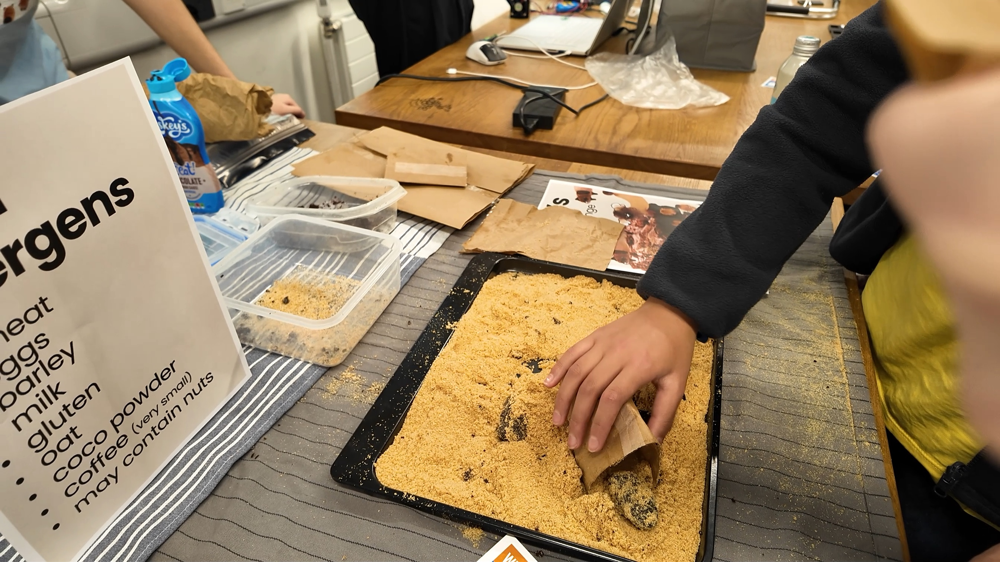
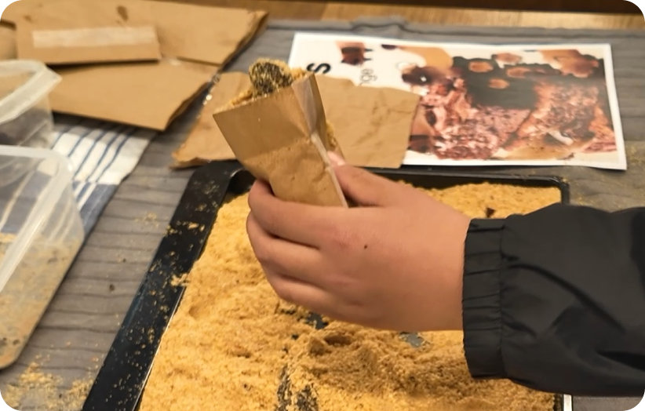

Dooti.
A better walk.
From pick-up to carry-home.

A handheld system that makes bags to size, seals them and keeps used bags discreetly contained.
- Discipline
- Product design
Design engineering - Scope
- User research · Prototyping
Testing · System integration - Outcome
- Bag maker + refill roll
+ detachable carry pouch
01 / EXPERIENCE THE PRINCIPLE
A bag that fits
the moment.
Dooti makes a bag to size, seals it, and pairs it with a carry-home pouch. Try the adjustable refill: choose a length, then seal and cut.
Interactive concept · Proportions are illustrative.
Choose a length to suit the task.
02 / RESOLVE THE PRODUCT SYSTEM
Three decisions.
One continuous routine.
A variable-length refill, integrated sealing and cutting, and a carry-home pouch bring the journey together. Select a decision to explore it.
 FINAL ARCHITECTURE / REFILL ROLL
FINAL ARCHITECTURE / REFILL ROLLMATERIAL EFFICIENCY
Pull only what
you need.
Users select the length of compostable refill material to suit different dog sizes. The design aims to avoid the excess of a fixed, oversized bag.
03 / DISCOVER THE PROBLEM
A small task.
An uncomfortable routine.
The reason for this combined system starts after pick-up. Dog-waste disposal continues long after the bag is filled. Dooti explores how collection, material use and carrying can work together as one considered experience.
How might we make collecting, carrying and disposing of dog waste feel less unpleasant?

FROM EVIDENCE TO DESIGN PRIORITIES
01 Collect cleanly
Reduce direct contact during pick-up. The interaction needs to feel straightforward as well as hygienic.
02 Use only what is needed
The final refill concept lets users choose a bag length for different dog sizes, rather than defaulting to an oversized bag.
03 Carry discreetly
Feedback showed that carrying a used bag remained uncomfortable. This became a reason to extend the design beyond a bag-making device.
04 / DEFINE THE DIRECTION
Let the evidence
shape the product.
The design developed through practical trade-offs: portability, reliable bag making, a simpler grip and a more comfortable way to carry waste.
Paper-based bag making lacked portability and reliability.
Move towards an adjustable film refill with an integrated sealing and cutting mechanism.
The grip and pick-up method needed refinement.
Simplify the central finger grips and explore paper for pick-up with a film bag for storage.
Sealing did not resolve the discomfort of carrying.
Add a detachable, odour-resistant pouch for temporary storage during the walk.
DESIGN PRINCIPLEDesign the whole routine, including what happens after the main task.
05 / DEVELOP THROUGH MAKING
Form. Function.
Then everything together.
Each model answered a different question. Size and shape led to functional exploration, then to the relationship between parts and assembly.

Start with the object
in the hand.
The first model established the size and shape of the handheld bag maker.
- Question
- How should the roll and enclosure fit into a portable object?
- Focus
- Overall form, proportions and the arrangement of the refill.
- Next step
- Develop the functions and features within that form.

Give the form
a working purpose.
The next stage explored functions and features, bringing the refill and handheld interaction into a more developed product.
- Question
- How can dispensing, sealing and cutting belong to one routine?
- Focus
- Functional features, controls and the relationship between product elements.
- Next step
- Resolve how the components fit and work together.
Resolve the system
from the inside out.
The final architecture brings the blade, heat wire, electronics and casing into a guided handheld mechanism.
- Question
- How do form, function and assembly support one another?
- Focus
- Component integration and refinements to the assembled product.
- Design value
- A coherent architecture for dispensing, sealing and carrying.
06 / TEST, LISTEN, REFRAME
The walk doesn’t end
when the bag is sealed.
Feedback revealed the remaining discomfort: carrying used bags. The response was to make temporary storage part of the product itself.


Make and seal
the bag.
A compact tool for collection.
Make, seal
and carry.
A complete system with a detachable storage pouch.
The decisive iteration changed the scope of the product, as well as its form.
07 / THE DESIGN TAKEAWAY
Better products come from
following the whole experience.
Desirability
User feedback connected cleaner pick-up with the need for discreet carrying.
Feasibility
Physical prototypes and the final architecture brought form, function and assembly into the same design process.
Material responsibility
The adjustable refill aims to reduce excess material by letting the user choose the bag length.